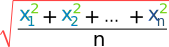

Definition of
Root Mean Square

The square root of the mean of the squares of a set of values.
Steps:
• square each value
• add them
• divide by how many values there are (= the arithmetic mean)
• take the square root of that
Example: The Root Mean Square of 5, 7 and 11 is:
√( [52+72+112]/3 )
= √( [25+49+121]/3 )
= √( 195/3 )
= √( 65 )
= 8.062...